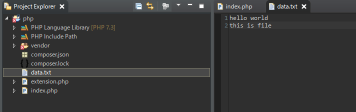
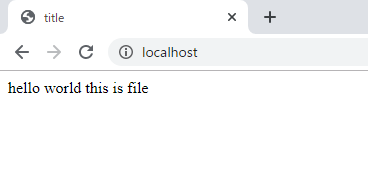
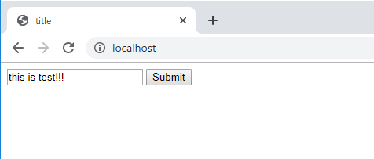
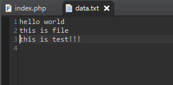
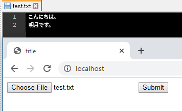
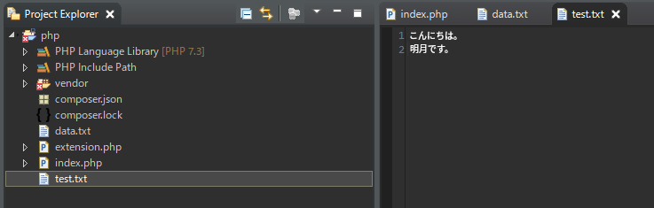

こんにちは。明月です。
I/OとはInput/Outoutという意味ですが、プログラムでI/Oというとファイル入出力という意味になります。
プログラムを作成してみればPropertyという環境ファイルを読み取りする時もあるし、クライアントにファイルを転送するために読み込む時もあります。
逆にプログラム上でログやデータをデータベースではなく、ファイルで格納するしブラウザからファイルをアップロードされ、ファイルを書き込む時もあります。
<?php
$contents = "";
try {
// ファイルがない場合、Warningのメッセージが発生するので、「@」によってFalseが発生して実行されない。
// fopenはファイルのコネクションを生成する。
if(@$handle = fopen('data.txt', 'r')) {
// ファイルコネクションでファイルを読み取る。
$contents = fread($handle, filesize('data.txt'));
}
} catch(Exception $e) {
print_r($e);
} finally{
// I/Oリソースは必ずcloseをしなければならない。
@fclose($handle);
}
?>
<!DOCTYPE html>
<html>
<head><title>title</title></head>
<body>
<?=$contents?>
</body>
</html>

そして同じフォルダにある「data.txt」ファイルを読み取ります。

ここで「data.txt」ファイルには改行がありますが、ウェブページには一行目で表示されます。参考にウェブブラウザは改行が「<br />」タグなので、バイナリの「\r\n」や「\n」はブラウザで改行されません。
fopenはファイルコネクションを生成してファイルを開いてfreadでファイルを読み取りします。
最後にfcloseで必ずリソースを返却しなければならないです。そうではなければプログラム上でI/Oリソースをずっと使用中になるので、他のセッションで使えなくなります。
PHPはスクリプトなのでrequest&response単位でリソースを自動に返却しますが、プログラムパフォーマンスのため、使用が終わったらすぐリソースを返却しましょう。
今回はファイルを書き込みしましょう。
<?php
$data = "";
// request方式がPOSTの場合、
if ($_SERVER["REQUEST_METHOD"] == "POST") {
$data = $_POST["data"];
try {
// ファイルがある場合、fopenからhandleを受け取ってfwriteが実行される。
if (@$handle = fopen('data.txt', 'a')) {
fwrite($handle, $data . "\r\n");
}
} catch (Exception $e) {
print_r($e);
} finally{
// I/Oリソースは必ずcloseをしなければならない。
@fclose($handle);
}
}
?>
<!DOCTYPE html>
<html>
<head><title>title</title></head>
<body>
<!-- submitボタンを押下するとPOSTタイプにrequestする。 -->
<form method="POST">
<input type="text" name="data" value="<?=$data?>">
<input type="submit">
</form>
</body>
</html>


初めにファイルを読み取る時にはfopen関数でパラメータを「r」を使いました。また、書き込む時には「a」を使いました。
上のパラメータはファイルのコネクションのタイプを選べることです。
| モード | 説明 |
|---|---|
| r | 読み取り専用。ポインタは最初です。 |
| r+ | 読み取り + 書き込み。ポインタは最初です。 |
| w | 書き込み専用。 ファイルは初期化になります。ファイルが存在しないなら作成します。 |
| w+ | 読み取り + 書き込み。ファイルは初期化します。ファイルが存在しないなら作成します。 |
| a | 書き込み専用。ポインタは最終です。 |
| a+ | 読み取り + 書き込み。ポインタは最終です。 |
| x | 書き込み専用。ポインタは最初です。ファイルが存在するとエラーが発生します。 |
| x+ | 読み取り + 書き込み。「ｘ」と同じモードです。 |
| c | 書き込み専用。ポインタは最初です。このモードで作成した内容は書き直しではなく、文字列が追加する。(テストの結果は書き直すけど。。。) |
| c+ | 読み取り + 書き込み。「c」と同じモードです。 |
| e | 開いているデスクリプタで「close-on-exec」フラグを設定しべきです。POSIX.1-2008互換性のあるシステムでコンパイルされたPHPでのみ使用することができます。 |
マニュアルをみれば、様々なモードオプションがありますね。でも、筆者は「r,w,a」しか使わないので実は他の機能はよくしりません。
「+」表示があるので、読み取り、書き込みを同時に使えますが、筆者の考えは良くないです。特に「r+」で作成したらポインタが最初になるので内容が追加されることではなく、書き直しになります。
仕様によってポインタを移動して書き直しすることもあると思いますが、ほとんど予想されない結果になります。
そのため、簡単に読み取りは「r」、新しく書き込むは「w」、既存ファイルから内容を追加は「a」を使う方がシンプルで使いやすいです。
<?php
if ($_SERVER["REQUEST_METHOD"] == "POST") {
// ファイルをアップロードしたらnameとtmp_name(任意ファイル)のパスがある。
$name = $_FILES["data"]["name"];
$path = $_FILES["data"]["tmp_name"];
try {
// 任意ファイルからバイナリ形式でデータを読み取る。
if (@$handle = fopen($path, 'rb')) {
$binary = fread($handle, filesize($path));
}
} catch (Exception $e) {
print_r($e);
} finally{
@fclose($handle);
}
try {
// バイナリ形式のデータをファイルに書き込む。
if (@$handle = fopen($name, 'wb')) {
fwrite($handle, $binary);
}
} catch (Exception $e) {
print_r($e);
} finally{
@fclose($handle);
}
}
?>
<!DOCTYPE html>
<html>
<head><title>title</title></head>
<body>
<form method="POST" enctype="multipart/form-data">
<input type="file" name="data">
<input type="submit">
</form>
</body>
</html>
上の例はブラウザからファイルをアップロードしたら格納するソースです。ここにはモードオプションで「b」が付けています。
「b」という意味はバイナリですが、ファイルからバイナリを読み取ってバイナリまま書き込みすることです。


ファイルアップロードができました。参考に実際のプログラミングする時にアップロードしたファイルをそのままサーバに書き込むのはセキュリティとして危ないです。
「.php」ファイルをアップロードしてそのphpファイルにサーバ情報などが出力するようにするとハッキングの危険性があるのでです。
その後、アップロードファイルがバイナリではなく、ただのテキストファイルならバイナリタイプではなく、テキストタイプでも問題ないです。
link - https://www.php.net/manual/en/function.fread.php
- [CakePHP] Errorページを設定する方法2020/02/20 03:00:00
- [CakePHP] Transactionを使う方法とEntityクラスを利用してInsert、Update、Deleteする方法2020/02/19 03:00:00
- [CakePHP] ORMのテーブルFetch設定2020/02/18 03:00:00
- [CakePHP] Cakeフレームワークでデータベースに接続する時に使うQuery式とEntityクラス、Tableクラス、ResultSet2020/02/17 08:16:23
- [CakePHP] データベース(MariaDB(Mysql))を接続する方法2020/02/14 03:00:00
- [PHP] namespaceとuse2020/02/13 03:00:00
- [CakePHP] RequestとResponseに関して2020/02/12 03:00:02
- [CakePHP] PHPのCakeからAjax要請がある時、jsonタイプ(json_encode関数)でResponseする方法とControllerでViewを選択する方法2020/02/08 03:00:00
- [CakePHP] MVCフレームワークのCakeをインストールする方法2020/02/07 03:00:02
- [PHP] 自動require及びincludeをする方法(spl_autoload_register)2020/02/05 03:00:00
- [PHP] 匿名関数(ラムダ式)とクロージャ(closure)2020/02/04 03:00:00
- [PHP] PHPのコーディング領域とデザイン領域を分離するテンプレートライブラリ Smarty2020/02/02 03:00:00
- [PHP] Reflection - Variable編2020/02/01 03:00:00
- [PHP] Reflection - Method編2020/01/31 03:00:00
- [PHP] Reflection - Class編2020/01/30 03:00:00
- [CakePHP] Errorページを設定する方法2020/02/20 03:00:00
- [CakePHP] Transactionを使う方法とEntityクラスを利用してInsert、Update、Deleteする方法2020/02/19 03:00:00
- [CakePHP] ORMのテーブルFetch設定2020/02/18 03:00:00
- [CakePHP] Cakeフレームワークでデータベースに接続する時に使うQuery式とEntityクラス、Tableクラス、ResultSet2020/02/17 08:16:23
- [CakePHP] データベース(MariaDB(Mysql))を接続する方法2020/02/14 03:00:00
- [PHP] namespaceとuse2020/02/13 03:00:00
- [CakePHP] RequestとResponseに関して2020/02/12 03:00:02
- [CakePHP] PHPのCakeからAjax要請がある時、jsonタイプ(json_encode関数)でResponseする方法とControllerでViewを選択する方法2020/02/08 03:00:00
- [CakePHP] MVCフレームワークのCakeをインストールする方法2020/02/07 03:00:02
- [PHP] 自動require及びincludeをする方法(spl_autoload_register)2020/02/05 03:00:00
- [PHP] 匿名関数(ラムダ式)とクロージャ(closure)2020/02/04 03:00:00
- [PHP] PHPのコーディング領域とデザイン領域を分離するテンプレートライブラリ Smarty2020/02/02 03:00:00
- [PHP] Reflection - Variable編2020/02/01 03:00:00
- [PHP] Reflection - Method編2020/01/31 03:00:00
- [PHP] Reflection - Class編2020/01/30 03:00:00